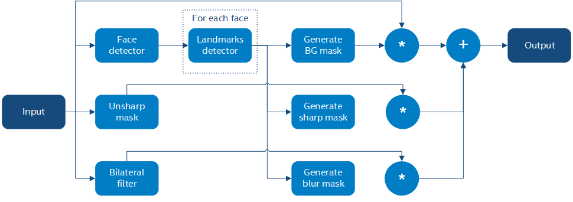

Implementing a Face Beautification Algorithm¶
Introduction¶
In this tutorial you will learn:
Basics of a sample face beautification algorithm;
How to infer different networks inside a pipeline with G-API;
How to run a G-API pipeline on a video stream.
Prerequisites¶
This sample requires:
PC with GNU/Linux* or Microsoft Windows* (Apple macOS* is supported but was not tested)
OpenCV 4.2 or higher built with Intel® Distribution of OpenVINO™ Toolkit (building with Intel® TBB is a plus)
The following pre-trained models from the Open Model Zoo
face-detection-adas-0001
facial-landmarks-35-adas-0002
To download the models from the Open Model Zoo, use the Model Downloader tool.
Face Beautification Algorithm¶
We will implement a simple face beautification algorithm using a combination of modern Deep Learning techniques and traditional Computer Vision. The general idea behind the algorithm is to make face skin smoother while preserving face features like eyes or a mouth contrast. The algorithm identifies parts of the face using a DNN inference, applies different filters to the parts found, and then combines it into the final result using basic image arithmetics:
Briefly the algorithm is described as follows:
Briefly the algorithm is described as follows:
Input image \(I\) is passed to unsharp mask and bilateral filters (\(U\) and \(L\) respectively);
Input image \(I\) is passed to an SSD-based face detector;
SSD result (a \([1 \times 1 \times 200 \times 7]\) blob) is parsed and converted to an array of faces;
Every face is passed to a landmarks detector;
Based on landmarks found for every face, three image masks are generated:
A background mask \(b\) indicating which areas from the original image to keep as-is;
A face part mask \(p\) identifying regions to preserve (sharpen).
A face skin mask \(s\) identifying regions to blur;
The final result \(O\) is a composition of features above calculated as \(O = b\*I + p\*U + s\*L\).
Generating face element masks based on a limited set of features (just 35 per face, including all its parts) is not very trivial and is described in the sections below.
Constructing a G-API Pipeline¶
Declare Deep Learning Topologies¶
This sample is using two DNN detectors. Every network takes one input and produces one output. In G-API, networks are defined with macro G_API_NET():
G_API_NET(FaceDetector, <cv::GMat(cv::GMat)>, "face_detector");
G_API_NET(LandmDetector, <cv::GMat(cv::GMat)>, "landm_detector");To get more information, see Declaring Deep Learning topologies described in the “Face Analytics pipeline” tutorial.
Describe the Processing Graph¶
The code below generates a graph for the algorithm above:
cv::GComputation pipeline([=]()
{
cv::GMat gimgIn; // input
cv::GMat faceOut = cv::gapi::infer<custom::FaceDetector>(gimgIn);
GArrayROI garRects = custom::GFacePostProc::on(faceOut, gimgIn, config::kConfThresh); // post-proc
cv::GArray<cv::GMat> landmOut = cv::gapi::infer<custom::LandmDetector>(garRects, gimgIn);
cv::GArray<Landmarks> garElems; // |
cv::GArray<Contour> garJaws; // |output arrays
std::tie(garElems, garJaws) = custom::GLandmPostProc::on(landmOut, garRects); // post-proc
cv::GArray<Contour> garElsConts; // face elements
cv::GArray<Contour> garFaceConts; // whole faces
std::tie(garElsConts, garFaceConts) = custom::GGetContours::on(garElems, garJaws); // interpolation
cv::GMat mskSharp = custom::GFillPolyGContours::on(gimgIn, garElsConts); // |
cv::GMat mskSharpG = cv::gapi::gaussianBlur(mskSharp, config::kGKernelSize, // |
config::kGSigma); // |
cv::GMat mskBlur = custom::GFillPolyGContours::on(gimgIn, garFaceConts); // |
cv::GMat mskBlurG = cv::gapi::gaussianBlur(mskBlur, config::kGKernelSize, // |
config::kGSigma); // |draw masks
// The first argument in mask() is Blur as we want to subtract from // |
// BlurG the next step: // |
cv::GMat mskBlurFinal = mskBlurG - cv::gapi::mask(mskBlurG, mskSharpG); // |
cv::GMat mskFacesGaussed = mskBlurFinal + mskSharpG; // |
cv::GMat mskFacesWhite = cv::gapi::threshold(mskFacesGaussed, 0, 255, cv::THRESH_BINARY); // |
cv::GMat mskNoFaces = cv::gapi::bitwise_not(mskFacesWhite); // |
cv::GMat gimgBilat = custom::GBilatFilter::on(gimgIn, config::kBSize,
config::kBSigmaCol, config::kBSigmaSp);
cv::GMat gimgSharp = custom::unsharpMask(gimgIn, config::kUnshSigma,
config::kUnshStrength);
// Applying the masks
// Custom function mask3C() should be used instead of just gapi::mask()
// as mask() provides CV_8UC1 source only (and we have CV_8U3C)
cv::GMat gimgBilatMasked = custom::mask3C(gimgBilat, mskBlurFinal);
cv::GMat gimgSharpMasked = custom::mask3C(gimgSharp, mskSharpG);
cv::GMat gimgInMasked = custom::mask3C(gimgIn, mskNoFaces);
cv::GMat gimgBeautif = gimgBilatMasked + gimgSharpMasked + gimgInMasked;
return cv::GComputation(cv::GIn(gimgIn), cv::GOut(gimgBeautif,
cv::gapi::copy(gimgIn),
garFaceConts,
garElsConts,
garRects));
});The resulting graph is a mixture of G-API’s standard operations, user-defined operations (namespace custom::), and DNN inference. The generic function cv::gapi::infer<>() allows you to trigger inference within the pipeline; networks to infer are specified as template parameters. The sample code is using two versions of cv::gapi::infer<>() :
A frame-oriented one is used to detect faces on the input frame.
An ROI-list oriented one is used to run landmarks inference on a list of faces – this version produces an array of landmarks per every face. More on this in “Face Analytics pipeline” (Building a GComputation section).
Unsharp mask in G-API¶
The unsharp mask \(U\) for image \(I\) is defined as:
where \(M()\) is a median filter, \(L()\) is the Laplace operator, and \(s\) is a strength coefficient. While G-API doesn’t provide this function out-of-the-box, it is expressed naturally with the existing G-API operations:
inline cv::GMat custom::unsharpMask(const cv::GMat &src,
const int sigma,
const float strength)
{
cv::GMat blurred = cv::gapi::medianBlur(src, sigma);
cv::GMat laplacian = custom::GLaplacian::on(blurred, CV_8U);
return (src - (laplacian \* strength));
}Note that the code snipped above is a regular C++ function defined with G-API types. Users can write functions like this to simplify graph construction; when called, this function just puts the relevant nodes to the pipeline it is used in.
Custom Operations¶
The face beautification graph is using custom operations extensively. This chapter focuses on the most interesting kernels, refer to G-API Kernel API for general information on defining operations and implementing kernels in G-API.
Face detector post-processing¶
A face detector output is converted to an array of faces with the following kernel:
using VectorROI = std::vector<cv::Rect>;
GAPI_OCV_KERNEL(GCPUFacePostProc, GFacePostProc)
{
static void run(const cv::Mat &inDetectResult,
const cv::Mat &inFrame,
const float faceConfThreshold,
VectorROI &outFaces)
{
const int kObjectSize = 7;
const int imgCols = inFrame.size().width;
const int imgRows = inFrame.size().height;
const cv::Rect borders({0, 0}, inFrame.size());
outFaces.clear();
const int numOfDetections = inDetectResult.size[2];
const float \*data = inDetectResult.ptr<float>();
for (int i = 0; i < numOfDetections; i++)
{
const float faceId = data[i \* kObjectSize + 0];
if (faceId < 0.f) // indicates the end of detections
{
break;
}
const float faceConfidence = data[i \* kObjectSize + 2];
// We can cut detections by the `conf` field
// to avoid mistakes of the detector.
if (faceConfidence > faceConfThreshold)
{
const float left = data[i \* kObjectSize + 3];
const float top = data[i \* kObjectSize + 4];
const float right = data[i \* kObjectSize + 5];
const float bottom = data[i \* kObjectSize + 6];
// These are normalized coordinates and are between 0 and 1;
// to get the real pixel coordinates we should multiply it by
// the image sizes respectively to the directions:
cv::Point tl(toIntRounded(left \* imgCols),
toIntRounded(top \* imgRows));
cv::Point br(toIntRounded(right \* imgCols),
toIntRounded(bottom \* imgRows));
outFaces.push_back(cv::Rect(tl, br) & borders);
}
}
}
};Facial Landmarks Post-Processing¶
The algorithm infers locations of face elements (like the eyes, the mouth and the head contour itself) using a generic facial landmarks detector (details) from OpenVINO™ Open Model Zoo. However, the detected landmarks as-is are not enough to generate masks — this operation requires regions of interest on the face represented by closed contours, so some interpolation is applied to get them. This landmarks processing and interpolation is performed by the following kernel:
GAPI_OCV_KERNEL(GCPUGetContours, GGetContours)
{
static void run(const std::vector<Landmarks> &vctPtsFaceElems, // 18 landmarks of the facial elements
const std::vector<Contour> &vctCntJaw, // 17 landmarks of a jaw
std::vector<Contour> &vctElemsContours,
std::vector<Contour> &vctFaceContours)
{
size_t numFaces = vctCntJaw.size();
CV_Assert(numFaces == vctPtsFaceElems.size());
CV_Assert(vctElemsContours.size() == 0ul);
CV_Assert(vctFaceContours.size() == 0ul);
// vctFaceElemsContours will store all the face elements' contours found
// in an input image, namely 4 elements (two eyes, nose, mouth) for every detected face:
vctElemsContours.reserve(numFaces \* 4);
// vctFaceElemsContours will store all the faces' contours found in an input image:
vctFaceContours.reserve(numFaces);
Contour cntFace, cntLeftEye, cntRightEye, cntNose, cntMouth;
cntNose.reserve(4);
for (size_t i = 0ul; i < numFaces; i++)
{
// The face elements contours
// A left eye:
// Approximating the lower eye contour by half-ellipse (using eye points) and storing in cntLeftEye:
cntLeftEye = getEyeEllipse(vctPtsFaceElems[i][1], vctPtsFaceElems[i][0]);
// Pushing the left eyebrow clock-wise:
cntLeftEye.insert(cntLeftEye.end(), {vctPtsFaceElems[i][12], vctPtsFaceElems[i][13],
vctPtsFaceElems[i][14]});
// A right eye:
// Approximating the lower eye contour by half-ellipse (using eye points) and storing in vctRightEye:
cntRightEye = getEyeEllipse(vctPtsFaceElems[i][2], vctPtsFaceElems[i][3]);
// Pushing the right eyebrow clock-wise:
cntRightEye.insert(cntRightEye.end(), {vctPtsFaceElems[i][15], vctPtsFaceElems[i][16],
vctPtsFaceElems[i][17]});
// A nose:
// Storing the nose points clock-wise
cntNose.clear();
cntNose.insert(cntNose.end(), {vctPtsFaceElems[i][4], vctPtsFaceElems[i][7],
vctPtsFaceElems[i][5], vctPtsFaceElems[i][6]});
// A mouth:
// Approximating the mouth contour by two half-ellipses (using mouth points) and storing in vctMouth:
cntMouth = getPatchedEllipse(vctPtsFaceElems[i][8], vctPtsFaceElems[i][9],
vctPtsFaceElems[i][10], vctPtsFaceElems[i][11]);
// Storing all the elements in a vector:
vctElemsContours.insert(vctElemsContours.end(), {cntLeftEye, cntRightEye, cntNose, cntMouth});
// The face contour:
// Approximating the forehead contour by half-ellipse (using jaw points) and storing in vctFace:
cntFace = getForeheadEllipse(vctCntJaw[i][0], vctCntJaw[i][16], vctCntJaw[i][8]);
// The ellipse is drawn clock-wise, but jaw contour points goes vice versa, so it's necessary to push
// cntJaw from the end to the begin using a reverse iterator:
std::copy(vctCntJaw[i].crbegin(), vctCntJaw[i].crend(), std::back_inserter(cntFace));
// Storing the face contour in another vector:
vctFaceContours.push_back(cntFace);
}
}
};The kernel takes two arrays of denormalized landmarks coordinates and returns an array of elements’ closed contours and an array of faces’ closed contours; in other words, outputs are, the first, an array of contours of image areas to be sharpened and, the second, another one to be smoothed.
Here and below Contour is a vector of points.
Get an Eye Contour¶
Eye contours are estimated with the following function:
inline int custom::getLineInclinationAngleDegrees(const cv::Point &ptLeft, const cv::Point &ptRight)
{
const cv::Point residual = ptRight - ptLeft;
if (residual.y == 0 && residual.x == 0)
return 0;
else
return toIntRounded(atan2(toDouble(residual.y), toDouble(residual.x)) \* 180.0 / CV_PI);
}
inline Contour custom::getEyeEllipse(const cv::Point &ptLeft, const cv::Point &ptRight)
{
Contour cntEyeBottom;
const cv::Point ptEyeCenter((ptRight + ptLeft) / 2);
const int angle = getLineInclinationAngleDegrees(ptLeft, ptRight);
const int axisX = toIntRounded(cv::norm(ptRight - ptLeft) / 2.0);
// According to research, in average a Y axis of an eye is approximately
// 1/3 of an X one.
const int axisY = axisX / 3;
// We need the lower part of an ellipse:
static constexpr int kAngEyeStart = 0;
static constexpr int kAngEyeEnd = 180;
cv::ellipse2Poly(ptEyeCenter, cv::Size(axisX, axisY), angle, kAngEyeStart, kAngEyeEnd, config::kAngDelta,
cntEyeBottom);
return cntEyeBottom;
}Briefly, this function restores the bottom side of an eye by a half-ellipse based on two points in left and right eye corners. In fact, cv::ellipse2Poly() is used to approximate the eye region, and the function only defines ellipse parameters based on just two points:
The ellipse center and the \(X\) half-axis calculated by two eye Points.
The \(Y\) half-axis calculated according to the assumption that an average eye width is \(1/3\) of its length.
The start and the end angles which are 0 and 180 (refer to
cv::ellipse()documentation).The angle delta: how much points to produce in the contour.
The inclination angle of the axes.
The use of the atan2() instead of just atan() in function custom::getLineInclinationAngleDegrees() is essential as it allows to return a negative value depending on the x and the y signs so we can get the right angle even in case of upside-down face arrangement (if we put the points in the right order, of course).
Get a Forehead Contour¶
The function approximates the forehead contour:
inline Contour custom::getForeheadEllipse(const cv::Point &ptJawLeft,
const cv::Point &ptJawRight,
const cv::Point &ptJawLower)
{
Contour cntForehead;
// The point amid the top two points of a jaw:
const cv::Point ptFaceCenter((ptJawLeft + ptJawRight) / 2);
// This will be the center of the ellipse.
// The angle between the jaw and the vertical:
const int angFace = getLineInclinationAngleDegrees(ptJawLeft, ptJawRight);
// This will be the inclination of the ellipse
// Counting the half-axis of the ellipse:
const double jawWidth = cv::norm(ptJawLeft - ptJawRight);
// A forehead width equals the jaw width, and we need a half-axis:
const int axisX = toIntRounded(jawWidth / 2.0);
const double jawHeight = cv::norm(ptFaceCenter - ptJawLower);
// According to research, in average a forehead is approximately 2/3 of
// a jaw:
const int axisY = toIntRounded(jawHeight \* 2 / 3.0);
// We need the upper part of an ellipse:
static constexpr int kAngForeheadStart = 180;
static constexpr int kAngForeheadEnd = 360;
cv::ellipse2Poly(ptFaceCenter, cv::Size(axisX, axisY), angFace, kAngForeheadStart, kAngForeheadEnd,
config::kAngDelta, cntForehead);
return cntForehead;
}As we have only jaw points in our detected landmarks, we have to get a half-ellipse based on three points of a jaw: the leftmost, the rightmost and the lowest one. The jaw width is assumed to be equal to the forehead width and the latter is calculated using the left and the right points. Speaking of the \(Y\) axis, we have no points to get it directly, and instead assume that the forehead height is about \(2/3\) of the jaw height, which can be figured out from the face center (the middle between the left and right points) and the lowest jaw point.
Draw Masks¶
When we have all the contours needed, you are able to draw masks:
cv::GMat mskSharp = custom::GFillPolyGContours::on(gimgIn, garElsConts); // |
cv::GMat mskSharpG = cv::gapi::gaussianBlur(mskSharp, config::kGKernelSize, // |
config::kGSigma); // |
cv::GMat mskBlur = custom::GFillPolyGContours::on(gimgIn, garFaceConts); // |
cv::GMat mskBlurG = cv::gapi::gaussianBlur(mskBlur, config::kGKernelSize, // |
config::kGSigma); // |draw masks
// The first argument in mask() is Blur as we want to subtract from // |
// BlurG the next step: // |
cv::GMat mskBlurFinal = mskBlurG - cv::gapi::mask(mskBlurG, mskSharpG); // |
cv::GMat mskFacesGaussed = mskBlurFinal + mskSharpG; // |
cv::GMat mskFacesWhite = cv::gapi::threshold(mskFacesGaussed, 0, 255, cv::THRESH_BINARY); // |
cv::GMat mskNoFaces = cv::gapi::bitwise_not(mskFacesWhite); // |The steps to get the masks are:
the “sharp” mask calculation:
fill the contours that should be sharpened;
blur that to get the “sharp” mask (
mskSharpG);
the “bilateral” mask calculation:
fill all the face contours fully;
blur that;
subtract areas which intersect with the “sharp” mask and get the “bilateral” mask (
mskBlurFinal);
the background mask calculation:
add two previous masks
set all non-zero pixels of the result as 255 (by
cv::gapi::threshold())revert the output (by
cv::gapi::bitwise_not) to get the background mask (mskNoFaces).
Configuring and Running the Pipeline¶
Once the graph is fully expressed, we can finally compile it and run on real data. G-API graph compilation is the stage where the G-API framework actually understands which kernels and networks to use. This configuration happens via G-API compilation arguments.
DNN Parameters¶
This sample is using OpenVINO™ Toolkit OpenVINO Runtime backend for DL inference, which is configured the following way:
auto faceParams = cv::gapi::ie::Params<custom::FaceDetector>
{
/\*std::string\*/ faceXmlPath,
/\*std::string\*/ faceBinPath,
/\*std::string\*/ faceDevice
};
auto landmParams = cv::gapi::ie::Params<custom::LandmDetector>
{
/\*std::string\*/ landmXmlPath,
/\*std::string\*/ landmBinPath,
/\*std::string\*/ landmDevice
};Every cv::gapi::ie::Params<> object is related to the network specified in its template argument. We should pass there the network type we have defined in G_API_NET() in the early beginning of the tutorial.
Network parameters are then wrapped in cv::gapi::NetworkPackage :
auto networks = cv::gapi::networks(faceParams, landmParams);More details in “Face Analytics Pipeline” (Configuring the Pipeline section).
Kernel Packages¶
In this example we use a lot of custom kernels, in addition to that we use Fluid backend to optimize out memory for G-API’s standard kernels where applicable. The resulting kernel package is formed like this:
auto customKernels = cv::gapi::kernels<custom::GCPUBilateralFilter,
custom::GCPULaplacian,
custom::GCPUFillPolyGContours,
custom::GCPUPolyLines,
custom::GCPURectangle,
custom::GCPUFacePostProc,
custom::GCPULandmPostProc,
custom::GCPUGetContours>();
auto kernels = cv::gapi::combine(cv::gapi::core::fluid::kernels(),
customKernels);Compiling the Streaming Pipeline¶
G-API optimizes execution for video streams when compiled in the “Streaming” mode.
cv::GStreamingCompiled stream = pipeline.compileStreaming(cv::compile_args(kernels, networks));More on this in “Face Analytics Pipeline” (Configuring the pipeline section).
Running the streaming pipeline¶
In order to run the G-API streaming pipeline, all we need is to specify the input video source, call cv::GStreamingCompiled::start(), and then fetch the pipeline processing results:
if (parser.has("input"))
{
stream.setSource(cv::gapi::wip::make_src<cv::gapi::wip::GCaptureSource>(parser.get<cv::String>("input")));
}
auto out_vector = cv::gout(imgBeautif, imgShow, vctFaceConts,
vctElsConts, vctRects);
stream.start();
avg.start();
while (stream.running())
{
if (!stream.try_pull(std::move(out_vector)))
{
// Use a try_pull() to obtain data.
// If there's no data, let UI refresh (and handle keypress)
if (cv::waitKey(1) >= 0) break;
else continue;
}
frames++;
// Drawing face boxes and landmarks if necessary:
if (flgLandmarks == true)
{
cv::polylines(imgShow, vctFaceConts, config::kClosedLine,
config::kClrYellow);
cv::polylines(imgShow, vctElsConts, config::kClosedLine,
config::kClrYellow);
}
if (flgBoxes == true)
for (auto rect : vctRects)
cv::rectangle(imgShow, rect, config::kClrGreen);
cv::imshow(config::kWinInput, imgShow);
cv::imshow(config::kWinFaceBeautification, imgBeautif);
}Once results are ready and can be pulled from the pipeline we display it on the screen and handle GUI events.
See Running the pipeline section in the “Face Analytics Pipeline” tutorial for more details.
Conclusion¶
The tutorial has two goals: to show the use of brand new features of G-API introduced in OpenCV 4.2, and give a basic understanding on a sample face beautification algorithm.
The result of the algorithm application:

On the test machine (Intel® Core™ i7-8700) the G-API-optimized video pipeline outperforms its serial (non-pipelined) version by a factor of 2.7 – meaning that for such a non-trivial graph, the proper pipelining can bring almost 3x increase in performance.